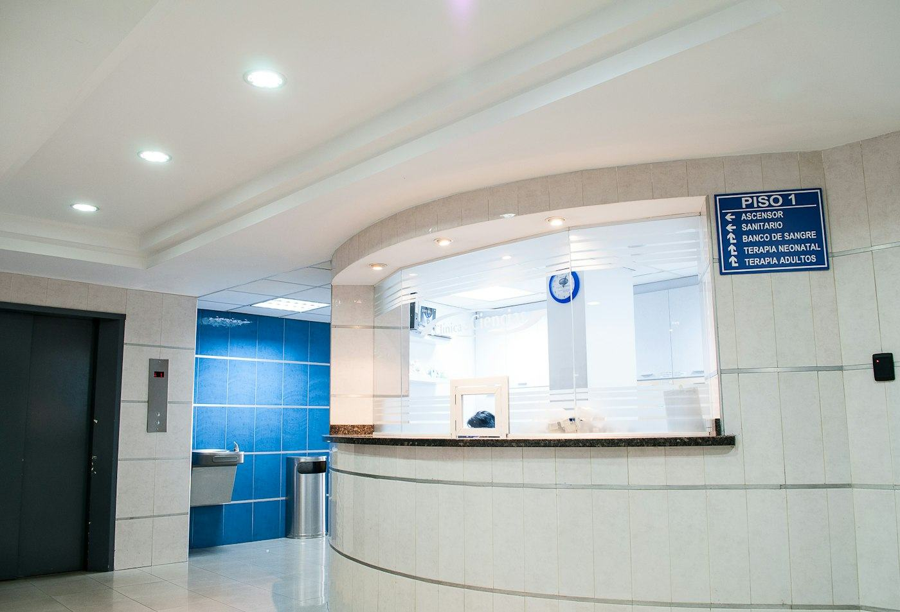

Accueil / Le cabinet
Le cabinet et l'équipe
Un cabinet de proximité au cœur de Libreville, avec un médecin radiologue présent sur place.

Notre engagement
Un examen bien fait, bien expliqué
Chaque patient est reçu sans précipitation. Nous expliquons l'examen avant de commencer, et les résultats à la fin.
- Radiologue présent sur place, du lundi au samedi
- Appareils numériques entretenus et contrôlés
- Hygiène et confidentialité respectées à chaque étape
- Lien direct avec votre médecin prescripteur
L'équipe
Ceux qui vous accueillent
AF
Dr Alexis Fernand KOUMBA
Radiologue, médecin spécialiste en radiodiagnostic et imagerie médicale
N
Nadia
Manipulatrice en radiologie
R
Rodrigue
Manipulateur en radiologie
S
Sylvie
Accueil et secrétariat médical
Équipement
Notre plateau technique
Radiologie numérique
Images disponibles immédiatement, dose de rayons réduite.
Échographe avec doppler
Sondes adaptées à chaque examen, y compris obstétrical.
Mammographe
Dépistage et diagnostic, couplé à l'échographie.
Liste du matériel à confirmer avec le cabinet.
Un examen à passer ?
Prenez rendez-vous en ligne, nous vous confirmons le créneau par WhatsApp.